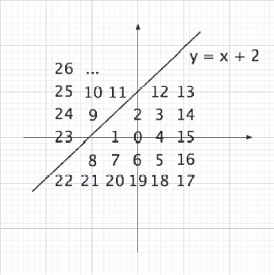

Home Page
F.A.Qs
Statistical Charts
Past Contests
Scheduled Contests
Award Contest
| Online Judge | Problem Set | Authors | Online Contests | User | ||||||
|---|---|---|---|---|---|---|---|---|---|---|
| Web Board Home Page F.A.Qs Statistical Charts | Current Contest Past Contests Scheduled Contests Award Contest | |||||||||
|
Language: Friends or Enemies?
Description A determined army on a certain border decided to enumerate the coordinates in its patrol in a way to make it difficult for the enemy to know what positions they are referring to in the case that the radio signal used for communication is intercepted. The enumeration process chosen was the following: first it is decided where the axes  Figure 1: Enumeration of points of integral coordinates In fact the enemy does not have to know either what position the army is referring to or the system used to enumerate the points. Such a project, complicated the life of the army, once that it is difficult to determine whether two points are on the same side of the border or on opposite sides. That is where they need your help. Input The input contains several test cases. The first line of the input contains an integer N (1 ≤ N ≤ 100) which represents the quantity of test cases. N test cases follow. The first line of each test case contains two integers a and b (−5 ≤ a ≤ 5 and −10 ≤ b ≤ 10) which describe the equation of the border: y = ax + b. The second line of each test case contains an integer K, indicating the number of queries that follow it (1 ≤ K ≤ 1000). Each one of the following K lines describes a query, composed by two integers M and N representing the enumerated coordinates of two points (0 ≤ M, N ≤ 65535). Output For each test case in the input your program should produce K + 1 lines. The first line should contain the identification of the test case in the form
Sample Input 2 1 2 10 26 25 25 11 24 9 23 28 25 9 25 1 25 0 9 1 23 12 26 17 1 2 12 0 1 1 2 2 3 3 4 4 5 5 6 6 7 7 8 8 9 9 10 10 11 11 12 Sample Output Caso 1 Mesmo lado da fronteira Mesmo lado da fronteira Mesmo lado da fronteira Mesmo lado da fronteira Mesmo lado da fronteira Lados opostos da fronteira Lados opostos da fronteira Lados opostos da fronteira Lados opostos da fronteira Lados opostos da fronteira Caso 2 Mesmo lado da fronteira Mesmo lado da fronteira Mesmo lado da fronteira Mesmo lado da fronteira Mesmo lado da fronteira Mesmo lado da fronteira Mesmo lado da fronteira Mesmo lado da fronteira Lados opostos da fronteira Mesmo lado da fronteira Mesmo lado da fronteira Lados opostos da fronteira Source South America 2006, Brazil Subregion |
[Submit] [Go Back] [Status] [Discuss]
All Rights Reserved 2003-2013 Ying Fuchen,Xu Pengcheng,Xie Di
Any problem, Please Contact Administrator